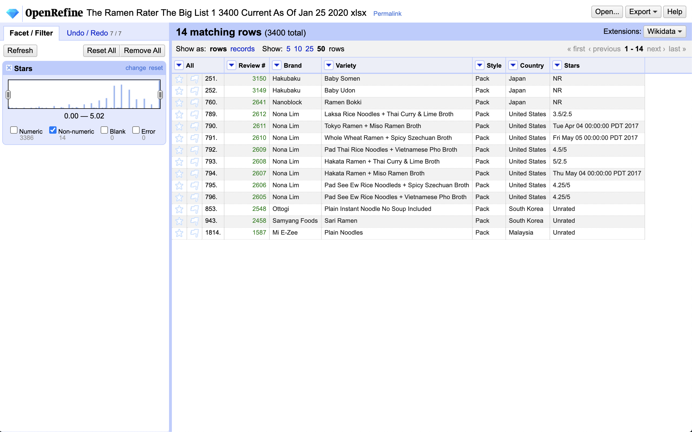

Ratings show box instant ramen variations score higher than most other ramen options
JOURN 124 Final Project by Connor Lin
When I first started searching for datasets to use for this final project, I looked through dozens of websites and files to find one that not only fit the quality and quantity requirements for the assignment, but also genuinely intrigued me and sparked questions right away.
After searching through the "Data is Plural" repository, I found a dataset of global instant ramen noodle reviews (and a few fresh ramen bowls from restaurants) that I thought was interesting and relatively concise. This dataset of 3,400 total reviews is generated by a website called The Ramen Rater that has been reviewing ramen and instant noodles since 2002.
After settling on what dataset I would use for this project, I downloaded a .xlsx file of the data. After scanning the spreadsheet, I noticed some inconsistencies in the brand names and country names inputted, as well as some invalid rating types in the rating column. I used OpenRefine and utilized the techniques we learned in class to standardize all of the labels and remove excess noise in the data. A screenshot of one of the many things I cleaned in OpenRefine can be seen below.
In this screenshot, I was in the process of deleting some noisy data, such as reviews that put a timestamp in the column for star ratings. Some other data cleaning that I did included standardizing the name "United States" and "United Kingdom" and I did the same for many of the brand names using the cluster tool.
Some of the questions that I immediately had once I found this dataset involved median ratings for different variations of ramen. I wanted to know about median ratings rather than average ratings because as we learned at the very beginning of this course, averages are easily swayed by outliers, and I thought it was likely that some ratings were bound to classify as outliers. Out of the columns in the dataset ("Review #," "Brand," "Variety," "Style," "Country," and "Rating") I was most intrigued in finding patterns in the review data between rating and country, and rating and style. I created five pivot tables (one for each data visualization) in Google Sheets when exploring and analyzing the data, listed in order of appearance:
In the "Distribution of style" chart above, it is obvious that "pack" is the most commonly reviewed style of ramen. While there are a few fresh ramen noodle bowl options from restaurants sprinkled into this dataset, the majority of reviews come from instant noodle options. Upon further inspection of the dataset in Google Sheets and doing my own research on specific brands, I learned that a few of the "bowl" classifications are also fresh ramen style, but I chose to leave the data as I found it. I did this because according to The Ramen Rater, the process of reviewing the ramen ramained uniform and consistent for all styles. To make this chart, I used the charts on Google Sheets and the pivot table I previously created with style options as the rows and the count of review numbers as the values.
In the choropleth map called "Global distribution of ramen reviews," I learned that the majority of reviews in this dataset came from countries in Asia, which is not a big surprise. Although the reviewer behind The Ramen Rater is from the United States, ramen is a Japanese food. These two pieces of information most likely explain why the highest number of reviews for any country was 606 from Japan, and the United States had the second highest number of reviews at 420. I decided to include this choropleth map because I think that knowing how many reviews a country has in the dataset is a very important factor to consider when analyzing median ratings later on, because high median ratings with only a few data entries to calculate can be questionable and less reliable than a country with hundreds of reviews.
This choropleth map titled "Ramen reviews indicate most countries in Asia have median ratings greater than or equal to 3.5" was created on Datawrapper and used the pivot table generated in Google Sheets that had country names as rows and median ratings as the values. From this map, I learned that most of the countries in Asia, many of which had a good number of reviews, received ratings that were equal to 3.5 or better. From my personal experience tasting ramen from Asian brands, I believe that this fit my previous expectations. One of the countries that I was most surprised by was Brazil, which had a median ramen rating of 3.8. Although they only had 20 data entries, I was fairly impressed that they scored as well as countries like the United States and China.
The chart named "Median ramen rating by style indicates box ramen scores highest reviews, other styles score relatively consistently" was made using Datawrapper and the pivot table that had style variations as the rows and median ratings as the values. From this data visualization, I learned that the median rating for most instant ramen styles was relatively the same (around 3.5-4 out of 5), but the box ramen style scored consistently better with a median rating of 5 out of 5. The bar style is an outlier that I included primarily because it was interesting to me; this one data entry was a chocolate bar with pieces of instant ramen inside, which scored 5 out of 5.
This last data visualization called "Nissin is most reviewed brand of ramen in Japan" was made with Datawrapper and used the pivot table created in Google Sheets and used the country names and the brand names as rows and the count of review numbers as the values. I then filtered out all of the rows that were not Japan, and put this data into Datawrapper. I decided to focus on Japan for this analysis because it was the country with the most ramen reviews by far (606) and it is the country that ramen originates from. I simplified this donut chart by putting any brand that did not have more than 20 reviews in a category labeled "Other Brands," and focused on the most common brands. To my surprise, I learned that Nissin was the most reviewed brand. Upon further analysis, I learned about all the different variations of Nissin ramen; before finding this dataset, I thought that Nissin ramen only made the super cheap c "Top Ramen" brand. Using the filtering tools on Google Sheets, I learned that the median rating for Nissin brand ramen in Japan was 4.375, which is a lot higher than I anticipated.